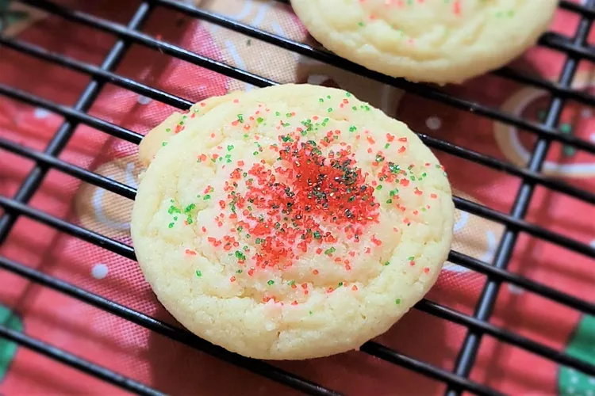
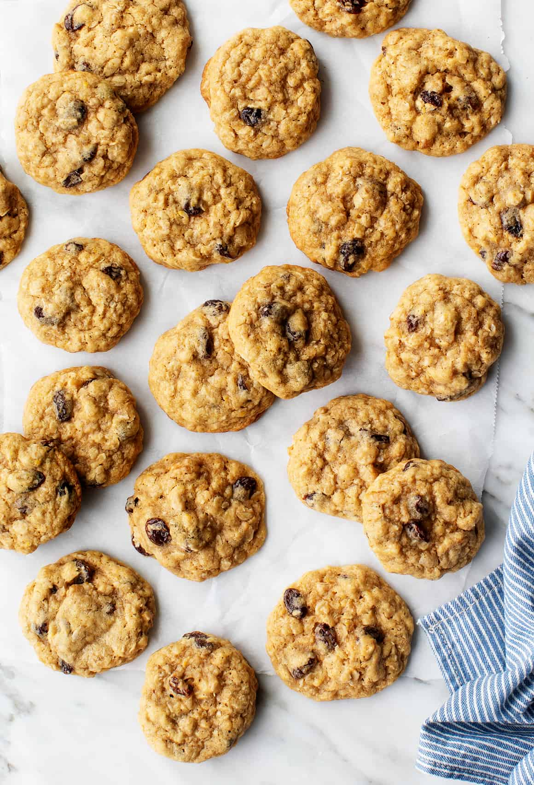

Smart Cookie!
The Cookie Book
Chocolate Chip Cookies
Total Time
30 min
Makes
36 Cookies
Author
Laura

Ingredients
- 1 cup salted butter softened
- 1 cup granulated sugar
- 1 cup light brown sugar packed
- 2 teaspoons pure vanilla extract
- 2 large eggs
- 3 cups all-purpose flour
- 1 teaspoon baking soda
- ½ teaspoon baking powder
- 1 teaspoon sea salt
- 2 cups chocolate chips (14 oz)
Instructions
-
Preheat oven to 375 degrees F. Line three baking sheets with
parchment paper and set aside.
-
In a medium bowl mix flour, baking soda, baking powder and
salt. Set aside.
-
Cream together butter and sugars until combined.
-
Beat in eggs and vanilla until light (about 1 minute).
-
Mix in the dry ingredients until combined.
-
Add chocolate chips and mix well.
-
Roll 2-3 Tablespoons (depending on how large you like your
cookies) of dough at a time into balls and place them evenly
spaced on your prepared cookie sheets.
-
Bake in preheated oven for approximately 8-10 minutes. Take
them out when they are just barely starting to turn brown.
-
Let them sit on the baking pan for 2 minutes before removing
to cooling rack.
Sugar Cookies
Total Time
30 min
Makes
46 Cookies
Author
Stephanie

Ingredients
- 2 ¾ cups all-purpose flour
- 1 teaspoon baking soda
- ½ teaspoon baking powder
- 1 cup butter, softened
- 1 ½ cups white sugar
- 1 egg
- 1 teaspoon vanilla extract
Instructions
-
Preheat the oven to 375 degrees F (190 degrees C).
-
Stir flour, baking soda, and baking powder together in a
small bowl.
-
Beat sugar and butter together in a large bowl with an
electric mixer until smooth. Beat in egg and vanilla.
Gradually blend in flour mixture. Roll dough into walnut-sized
balls and place 2 inches apart onto ungreased baking sheets.
-
Bake in the preheated oven until edges are golden,
8 to 10 minutes. Cool on the baking sheets briefly before
removing to a wire rack to cool completely.
Oatmeal Cookies
Total Time
45 min
Makes
20 Cookies
Author
Love and Lemons

Ingredients
- 1 cup all-purpose flour, spooned and leveled
- 1/2 teaspoon baking soda
- 1/2 teaspoon baking powder
- 1/2 teaspoon sea salt
- 1/2 teaspoon cinnamon
- 1/2 cup coconut oil or unsalted butter, melted
- 3/4 cup packed brown sugar
- 1 large egg
- 1 large egg yolk
- 2 teaspoons vanilla
- 1 1/2 cup whole rolled oats
- 3/4 cup raisins
- 1/2 cup chopped walnuts, optional
Instructions
-
Preheat the oven to 350°F and line two baking sheets with
parchment paper.
-
Combine the flour, baking soda, baking powder, salt, and
cinnamon in a large bowl. In a separate bowl, whisk together
the melted coconut oil, sugar, whole egg, egg yolk, and
vanilla, whisking vigorously.
-
Stir the wet ingredients into the dry ingredients. Stir in
the oats, raisins, and walnuts, if using, folding into a
tight batter. Set the dough aside for 20 minutes while the
oven preheats. (Note: if your dough seems too wet to become
scoop-able, chill it in the fridge for this 20 minutes and
it'll firm up). If your dough is too crumbly, stir in 2 to 3
tablespoons water.
-
Use a cookie scoop to divide the dough into 20
tablespoon-sized balls. Roll lightly in barely damp hands to
make them round. Spread out onto the prepared baking sheets
and bake until puffed, golden, and a touch underbaked-looking,
10 to 11 minutes. Let cool on the pans for 5 minutes before
transferring to a wire rack to cool completely.